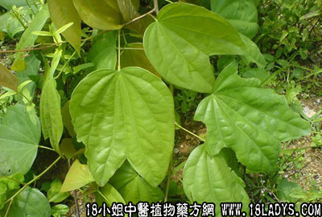

别名：血龙、园龙。
植物名：龙须藤。
生长环境：本品为木质藤本。生于山坡、溪边、旷地灌木丛中。
分布：越南、印度、爪哇和我国长江以南各省，南至海南岛。
入药部分：根、茎。
采集期：全年。
采购地点：从药材公司购入。
性味：性微凉、味苦。
功能：活血、祛风湿、去湿火。
主治、用量和用法：1、风湿脚软，配伍用；2、湿火腰痛、脚痛，配伍用；3、跌打筋络痛，配伍用。
验方1（治风湿脚软）：过江龙1两、枫香寄生5钱、半枫荷1两、千斤拔1两、鸡脚4至5对、清水五碗，煎成一碗服。
（方解）：半枫荷、过江龙、千斤拔祛风去湿，枫香寄生强筋壮骨，鸡脚以形补形，为扶正祛邪之剂。
（方歌）风湿脚软过江龙，千斤拔与枫荷从，枫香寄生加鸡脚，煎汤服食自然崧。
验方2（治湿火腰痛、脚痛方）过江龙1两、川破石5钱、千斤拔5钱、清水4碗，煎成一碗服。或加猪脚猪腰同煎。
（方解）方中用过过江龙、川破石之苦凉，去湿火，泄热邪、千斤拔两肝肾，强腰脚，加猪脚、猪腰同煎，以从其类，作为滋补，可收攻补兼施之效。
（方歌）湿火腰疼脚有痛，皆由湿热火交攻，江龙破石千斤拔，猪脚同煎病自崧。
验方3（治跌打筋络痛方）：过江龙1两、黑老虎5钱、千打锤5钱、鸡骨香5钱、清水四碗，煎成一碗服。
（方解）：本方千大捶、鸡骨香、黑老虎均是跌打要药，能止痛，祛瘀生新，祛风消肿，加过江龙以通筋活络，通则不痛。
（方歌）：跌打外伤筋络痛，追风散瘀过江龙，鸡香千捶黑老虎，舒筋消肿立时崧。
附录：（子）治胃痛：干用1至2个，打碎，清水煎服。
参考资料：《临床实用中药》祛风湿、壮筋骨、活血脉、治跌打及腰痛、白浊（用根煲猪肉食）、内伤寒火、消妇人肝郁气痛、肝胃痛（每次用子两个、连壳打烂煎水服，亦可与肉同煎)，解毒止痒，可洗内外痔疳疔。
《广东中医》（1916年第三期）新会县罗坑卫生院介绍治疗慢性关节炎风湿方：过江龙、走马胎各3钱、过山风、宽筋藤各5钱、豆豉羌、鹰不泊各1两，桑枝、千斤拔各1两（其中过江龙先煎，豆豉羌后下），水煎，每日一服，连服数日，曾治42例，治愈率74%。但热性风湿病无效。